轮廓
虽然Canny之类的边缘检测算法可以根据像素间的差异检测出轮廓边界的像素，但是它并没有将轮廓作为一个整体。下一步是要把这些边缘像素组装成轮廓。现在你也许希望OpenCV中有一个方便的函数能实现这一步，事实上这个函数就是cvFindContours()。为了演示如何使用这些函数，本章从一些基本的问题入手。具体说来，我们会详细介绍内存存储器（memory storage）的概念，这是OpenCV在创建动态对象时存取内存的技术；然后是序列（sequence）基本介绍，在处理轮廓的时候通常需要使用序列。了解这些基本的概念后，我们就可以深入讨论轮廓检测的某些细节。最后我们将讨论轮廓检测的一些实际应用。
内存
OpenCV使用内存存储器（memory storage）来统一管理各种动态对象的内存。内存存储器在底层被实现为一个有许多相同大小的内存块组成的双向链表，通过这种结构，OpenCV可以从内存存储器中快速地分配内存或将内存返回给内存存储器。OpenCV中基于内存存储器实现的函数，经常需要向内存存储器申请内存空间（特别是那些返回动态结果的函数）。
内存存储器可以通过以下四个函数访问：
CvMemStorage* cvCreateMemStorage(
int block_size = 0
);
void cvReleaseMemStorage(
CvMemStorage** storage
);
void cvClearMemStorage(
CvMemStorage* storage
);
void* cvMemStorageAlloc(
CvMemStorage* storage
);
cvCreateMemStorage用于创建一个内存存储器。参数block_size对应内存存储器中每个内存块的大小。
如果block_size为0，则表示内存块采用默认的大小，内存块默认的大小为64KB。该函数返回一个新创建的内存存储器指针。
cvReleaseMemStorage函数通过storage获取有效的内存存储器的地址，然后释放该内存存储器的所有空间。该函数的用法和OpenCV中释放图像、释放矩阵或者释放其他结构的函数方法类似。
cvClearMemStorage函数则用于清空内存存储器。注意，该函数是仅有的一种释放内存存储器中分配的内存的方法。该函数和通常释放内存的函数区别是，它只是将释放的内存返还给内存存储器，而并不返还给系统。实际上，通过cvClearMemStorage，我们可以很方便地重复使用内存存储器中内存空间。注意，删除任何动态对象（如CvSeq、CvSet等）并不会将内存返还给内存存储器（这些结构通过在内部创建一个内存存储器以达到内存重复利用的目的）。
就像malloc()可以从堆中分配空间一样，OpenCV中的cvMemStorageAlloc也可以从一个内存存储器中申请空间。只需要向cvMemStorageAlloc指定一个内存存储器
和要申请的内存空间大小，然后返回分配内存的地址（返回值和malloc一样为void指针）。
序列
序列是内存存储器中可以存储的一种对象。序列是某种结构的链表。OpenCV中，序列可以存储多种不同的结构。你可以将序列想象为许多编程语言中都存在的容器类或者容器类模板（如C++中的vector）。序列在内存被实现为一个双端队列（deque）。因此序列可以实现快速的随机访问，以及快速删除顶端的元素，但是从中间删除元素则稍慢些。
序列中有一些重要的属性（参考例8-1）需要了解。首先，最常用到的是total成员，total存储序列中
保存的数据的个数。其次是h_prev，h_next，v_prev，和v_next，它们是CV_TREE_NODE_FIELDS的一部分，指向其他的序列（分别为上下左右四个方向）。这4个指针不是用来访问序列中的元素，而是用来链接不同的序列。OpenCV中也有其他的结构包括CV_TREE_NODE_FIELDS，我们可以使用包含CV_TREE_NODE_FIELDS的结构构造出更复杂的结构，例如队列、树、图等。仅仅使用变量h_prev和h_next，可实现一个简单的链表。另外两个变量v_prev和v_next可以用于创建那些比较密切的复杂的拓扑结构。通过这四个变量，函数cvFindContours可以将图像中的复杂的轮廓构造为轮廓树。
例8-1：结构CvSeq的定义
Example 8-1. Internal organization of CvSeq sequence structure
typedef struct CvSeq {/Cv序列
int flags; // miscellaneous flags多样标志
int header_size; // size of sequence header序列头的大小
CvSeq* h_prev; // p r e v i o u s s e q u e n c e前一个序列
CvSeq* h_next; // next sequence下一个序列
CvSeq* v_prev; // 2nd previous sequence前面第2个序列
CvSeq* v_next // 2nd next sequence后面第2个序列
int total; // total number of elements总共的元素个数
int elem_size; // size of sequence element in byte序列元素大小尺寸
char* block_max; // maximal bound of the last block上一个块的最大边界
char* ptr; // current write pointer当前写指针
int delta_elems; // how many elements allocated
// when the sequence grow当序列增长时有多少元素分配s
CvMemStorage* storage; // where the sequence is stored序列存储于哪
CvSeqBlock* free_blocks; // free blocks list空闲的块列表
CvSeqBlock* first; // pointer to the first sequence block指向第一序列块的指针
}创建序列
前面已经介绍了序列的结构。实际上，很多OpenCV函数可以返回序列。当然，我们也可以自己用cvCreateSeq函数手工创建序列。跟OpenCV中的许多对象一样，有一个分配函数能够创建一个序列，并返回指向所创建数据结构的指针。这个函数是cvCreateSeq()。
CvSeq* cvCreateSeq(
int seq_flags,
int header_size,
int elem_size,
CvMemStorage* storage
);
调用这个函数首先需要知道一些信息，这些信息用于控
制创建的序列采用何种方式来组织数据。还需要序列的头大小（通常为sizeof(CvSeq)），以及序列要存储的元素的大小。最后，还需要为序列指定一个内存存储器，这样当序列要添加元素时，便会从内存存储器申请空间。
flags变量可由3个类值组成，不同类之间的标志可以用或运算来组合。第一类确定序列中元素的类型，多数类型用户可能不熟悉，另外一些类型则为OpenCV的内部函数使用。还有一些标志仅仅用于特定的元素类型，例如CV_SEQ_FLAG_CLOSED通常用于表示一个闭合的多边形。
• CV_SEQ_ELTYPE_POINT 点坐标：(x, y)
• CV_SEQ_ELTYPE_CODE Freeman：0..7
• CV_SEQ_ELTYPE_PPOINT 指向一个点的指针： &(x, y)
• CV_SEQ_ELTYPE_GRAPH_EDGE &next_o,&next_d, &vtx_o, &vtx_d
• CV_SEQ_ELTYPE_GRAPH_VERTEX first_edge, &(x, y)
• CV_SEQ_ELTYPE_TRIAN_ATR 二叉树的节点
• CV_SEQ_ELTYPE_CONNECTED_COMP 联通的区域
• CV_SEQ_ELTYPE_POINT3D 三维的点坐标：(x, y, z)
第二类表示序列本身的性质，它可以是下面任意一个。
• CV_SEQ_KIND_SET 元素的集合
• CV_SEQ_KIND_CURVE 元素所定义的曲线
• CV_SEQ_KIND_BIN_TREE 二叉树
• CV_SEQ_KIND_GRAPH 图，其节点为序列内元素
第三类表示序列的其他属性。
• CV_SEQ_FLAG_CLOSED 序列是闭合的（多边形）
• CV_SEQ_FLAG_SIMPLE 序列是简单的（多边形）
• CV_SEQ_FLAG_CONVEX 序列是凸的（多边形）
• CV_SEQ_FLAG_HOLE 序列是一个嵌套的（多边形）
删除序列
void cvClearSeq(
CvSeq* seq
);
cvClearSeq可以清空序列中的所有元素。不过该函数不会将不再使用的内存返回到内存存储器中，也不会释放给系统。但是当重新向序列中添加元素时，可以重复使用这里面的内存块。如果你想回收序列中的内存块，必须使用cvClearMemStore来实现。
直接访问序列中的元素
有时候常常需要访问序列中的某个元素，这里有几种访问的方法。最常用同时也比较正确的方法是通过cvGetSeqElem()函数来随机访问某个元素。
char* cvGetSeqElem(seq, index);
当然还需要将cvGetSeqElem返回的指针转换为序列中实际存储的元素的类型。下面例子是将一个保存CvPoint序列中所有的点元素打印出来（序列可能是cvFindContours返回的轮廓）：
for(int i=0; i<seq->total; ++i){
CvPoint* p = (CvPoint*)cvGetSeqElem(seq, i);
printf(“(%d, %d)\n”, p->x, p->y);
}
同样可以检测一个元素是否在序列中，cvSeqElemIdx函数可以实现该功能：
int cvSeqElemIdx(
const CvSeq* seq,
const void* element,
CvSeqBlock** block = NULL
);
cvSeqElemIdx函数是一个相对耗时的操作，因此使用的时候需要慎重（所花的时候跟序列的大小成正比）。参数分别为序列的指针和元素的指针。另外，还有一个可选的参数block，如果block不为空则存放包含所指元素的块的地址。
切片、复制和移动序列中的数据
cvCloneSeq深度复制一个序列，并创建一个完全独立的序列结构。
CvSeq* cvCloneSeq(
const CvSeq* seq,
CvMemStorage* storage = NULL
);
该函数是对cvSeqSlice()进行简单的包装。cvSeqSlice()函数可以为序列中的子序列生成一个新的序列（深度复制）；也可以仅仅为子序列创建一个头，和原来序列共用元素空间。
CvSeq* cvSeqSlice(
const CvSeq* seq,
CvSlice slice,
CvMemStorage* storage = NULL,
int copy_data = 0
);
cvSeqSlice中有一个CvSlice类型的参数，对应一个切片。我们可以用cvSlice(a, b)函数，或CV_WHOLE_SEQ宏来定义切片，其中a对应开始，b对应结尾。在创建子序列的时候，只有切片之间的元素才会被复制（b如果为CV_WHOLE_SEQ_END_INDEX则表示序列在a位置后面的所有元素）。参数copy_data表示是否进行深度复制，如果进行深度复制则要复制每个元素。
切片同样可以用来定义要删除或添加的序列，分别对应cvSeqRemoveSlice和cvSeqInsertSlice函数（参数一致）。
void cvSeqRemoveSlice(
CvSeq* seq,
CvSlice slice
);
void cvSeqInsertSlice(
CvSeq* seq,
int before_index,
const CvArr* from_arr
);
使用指定的比较函数，我们可以对序列中的元素进行排序，或者搜索一个（排序过的）序列。元素间的比较函数需要有以下函数原型：
typedef int (*CvCmpFunc)(const void* a, const void* b, void* userdata);
a和b为两个要排序的元素的指针，userdata对应一个扩展数据，可以用来定义排序或查找的条件。当a小于b
时比较函数返回-1，大于b时返回1，相等则返回0。
定义了比较函数之后，就可以用cvSeqSort对序列进行排序，也可以用cvSeqSearch来搜查序列中的元素。如果序列已经排序的话，搜索一个元素的时间复杂度为O(log n)。如果序列没有排序，则搜索元素的时间复杂度为O(n)。如果元素搜索成功，*elem_idx将保存元素在序列中的索引，然后返回对应元素的指针。如果没有找到相同的元素则返回NULL。
void cvSeqSort(
CvSeq* seq,
CvCmpFunc func,
void* userdata = NULL
);
char* cvSeqSearch(
CvSeq* seq,
const void* elem,
CvCmpFunc func,
int is_sorted,
int* elem_idx,
void* userdata = NULL
);
cvSeqInvert可以用于将序列进行逆序操作。该函数不会修改元素的内容，但是会将序列中的元素重新组织，改为逆序。
void cvSeqInvert(
CvSeq* seq
);
根据用户设定的标准，OpenCV可以通过cvSeqPartition()
函数拆分序列。该函数使用类似于前面提到比较函数，但是不同的是如果两个参数相同，则返回非0值；如果不同则返回0（例如用于搜索和排序的函数的求反）。
int cvSeqPartition(
const CvSeq* seq,
CvMemStorage* storage,
CvSeq** labels,
CvCmpFunc is_equal,
void* userdata
);
拆分操作需要申请新的内存用于存储结果。参数labels是指向序列指针的指针。当cvSeqPartition调用结束时，参数labels中是一个整数序列，序列中元素是跟序列seq中的元素一一对应。这些整数的值从0开始递增，是拆分后的元素的类别标志。参数is_equal对应比较
函数，userdata对应比较函数的userdata参数。
图8-1为在一个100×100画板上随机生成的100个点。调用cvSeqPartition对这些点进行处理，比较函数为2个点之间的欧几里得距离，当2个点之间的距离小于5时返回1，否则返回0。聚类结果以参数lables中的值作为名字标出。
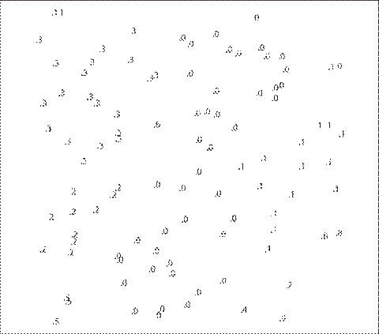
图8-1:100×100画布上由100个点组成的序列在距离小于5时的划分
将序列作为栈来使用
如前所述，序列在内部其实对应一个双端序列。因此，我们可以高效地从序列的任意一段（开头和结尾）访问序列。这样我们可以很自然地将序列当成一个栈使用。与CvSeq结构一起使用，下面的六个函数可将序列封装成一个栈（准确地说，是双端队列，因此它们可从两端操作元素）。
char* cvSeqPush(
CvSeq* seq,
void* element = NULL
);
char* cvSeqPushFront(
CvSeq* seq,
void* element = NULL
);
void cvSeqPop(
CvSeq* seq,
void* element = NULL
);
void cvSeqPopFront(
CvSeq* seq,
void* element = NULL
);
void cvSeqPushMulti(
CvSeq* seq,
void* elements,
int count,
int in_front = 0
);
void cvSeqPopMulti(
CvSeq* seq,
void* elements,
int count,
int in_front = 0
);
主要的操作函数是cvSeqPush()，cvSeqPushFront()，cvSeqPop()和cvSeqPopFront()。因为它们操作序列两端，可以在O(1)时间完成操作（和序列大小没有关系）。Push函数返回压栈的元素指针。Pop函数弹出栈顶元素，并且可以选择是否保存弹出的栈顶元素（element不为NULL则保存弹出的元素）。cvSeqPushMulti和cvSeqPopMulti用于一次将多个元素压栈和出栈，还有一个参数用于指定对应序列的开头
还是结尾。可以用宏来表示开头和结尾：CV_FRONT(1)对应开头；CV_BACK(0)对应结尾。
插入和删除元素
char* cvSeqInsert(
CvSeq* seq,
int before_index,
void* element = NULL
);
void cvSeqRemove(
CvSeq* seq,
int index
);
可以用cvSeqInsert()和cvSeqRemove()在序列的中间添加和删除元素。但是请注意，它们的执行效率不是很高，具体的时间依赖序列中元素的数目。
序列中块的大小
当刚开始看文档时，cvSetSeqBlockSize()函数的作用可能不是很明显。它的参数为序列和新内存块的大小，当序列中内存空间不足要分配新的块时，将按照参数分配块的大小。块越大，序列中出现内存碎片的可能性就越小，但是内存中更多的内存可能被浪费。默认的内存块大小为1K字节，不过我们可以随时改变块的大小。
void cvSetSeqBlockSize(
CvSeq* seq,
Int delta_elems
);
序列的读取和写入
当你使用序列时，如果你需要最高的性能，你可以使用一些特殊的函数修改序列（使用时需要特别小心）。这些函数通过专门的结构来保存序列的当前状态，这样使得很多后续操作可以在更短的时间内完成。
保存序列写状态的结构为CvSeqWriter。CvSeqWriter结构通过cvStartWriteSeq函数初始化，然后由cvEndWriteSeq关闭写状态。当序列写状态被打开的时候，可以通过CV_WRITE_SEQ()宏向序列写入元素。通过CV_WRITE_SEQ()宏写元素比cvSeqPush添加元素的效率更高，但是序列头中的一些信息并没有被即时刷新。换言之，刚写入的元素对用户来说可能并不能访问。写操作只有在执行cvEndWriteSeq函数后，才会真正的
写到序列中（可以认为之前是在缓冲中）。
如果必要，用户也可以通过cvFlushSeqWriter()函数来显式刷新写操作，而不需要关闭写状态。
void cvStartWriteSeq(
int seq_flags,
int header_size,
int elem_size,
CvMemStorage* storage,
CvSeqWriter* writer
);
void cvStartAppendToSeq(
CvSeq* seq,
CvSeqWriter* writer
);
CvSeq* cvEndWriteSeq(
CvSeqWriter* writer
);
void cvFlushSeqWriter(
CvSeqWriter* writer
);
CV_WRITE_SEQ_ELEM(elem, writer);
CV_WRITE_SEQ_ELEM_VAR(elem_ptr, writer)
这些函数参数的含义都是比较明了的。cvStartWriteSeq函数中的seq_flags，header_size和elem_size参数和cvCreateSeq函数的参数含义相同。cvStartAppendToSeq初始化写状态结构到序列的末尾。CV_WRITE_SEQ_ELEM宏则需要一个要写入的元素（如一个CvPoint元素）和对应的写状态结构指针；该宏首
先添加一个新元素到序列，并将参数指定的元素复制到新创建的元素。
为了演示上面相关函数的用法，我们创建一个序列，并写入100个320×240矩形区域中随机点：
CvSeqWriter writer;
cvStartWriteSeq(CV_32SC2, sizeof(CvSeq), sizeof(CvPoint), storage, &writer);
for(i=0; i<100; i++)
{
CvPoint pt; pt.x=rand()%320; pt.y=rand()%240;
CV_WRITE_SEQ_ELEM(pt, writer);
}
CvSeq* seq=cvEndWriteSeq(&writer);
同样，读操作也有对应的一组函数：
void cvStartReadSeq(
const CvSeq* seq,
CvSeqReader* reader,
int reverse = 0
);
int cvGetSeqReaderPos(
CvSeqReader* reader
);
void cvSetSeqReaderPos(
CvSeqReader* reader,
int index,
int is_relative = 0
);
CV_NEXT_SEQ_ELEM(elem_size, reader);
CV_PREV_SEQ_ELEM(elem_size, reader);
CV_READ_SEQ_ELEM(elem, reader);
CV_REV_READ_SEQ_ELEM(elem, reader)
CvSeqReader结构和CvSeqWriter结构类似，用来保存序列的读状态，可以用cvStartReadSeq函数初始化。参数reverse可以用于指定用正序还是逆序读序列，0表示正序，1表示逆序。cvGetSeqReaderPos返回读状态在序列中的当前位置。cvSetSeqReaderPos则可以用来设置读操作的新的位置。参数is_relative如果非0，则表示cvSetSeqReaderPos设置的新位置是当前位置的相对地址，否则是序列的绝对地址。
CV_NEXT_SEQ_ELEM()和CV_PREV_SEQ_ELEM()这两个宏则用于在序列中向后或向前移动。它们并不进行错误检查，因此如果是无意越过序列边界则不会有错误提示。CV_READ_SEQ_ELEM()和CV_REV_READ_SEQ_ELEM()中读元素，它们会复制当前的元素并将读状态中的位置（向前或向后）移动一个元素。这两个宏只需要输入需要复制变量的名称；变量的地址会在宏内计算。
序列和数组
有时候可能需要将序列（通常是点序列）转换成数组。
void* cvCvtSeqToArray(
const CvSeq* seq,
void* elements,
CvSlice slice = CV_WHOLE_SEQ
);
CvSeq* cvMakeSeqHeaderForArray(
int seq_type,
int header_size,
int elem_size,
void* elements,
int total,
CvSeq* seq,
CvSeqBlock* block
);
函数cvCvtSeqToArray复制序列的全部或部分到一个连续内存数组中。如果你需要将一个保存20个CvPoint的序列转换成数组，那么需要的内存（elements指针指向此内存）大小为40个整数大小（20*sizeof(CvPoint)）的空间。第三个可选参数slice对应序列的切片，或者默认参数CV_WHOLE_SEQ。如果使用CV_WHOLE_SEQ，那么整个序列被转换。
和cvCvtSeqToArray函数相对的功能是通过cvMakeSeqHeaderForArray()将数组转换为序列。这种情况下，你可以从已有的数组数据建立一个序列。函数开始的几个参数和cvCreateSeq()中用到的一样。除了要求需要复制的序列的数据（elements）和数组元素的个数（total）之外，还需要你提供序列头（seq）和序列的内存块结构（block）。这种方法生成的序列
和其他方法生成的序列不太一样。具体说来就是无法改变已生成的序列的数据。
查找轮廓
现在终于可以讨论轮廓的问题了。首先我们需要了解轮廓到底是什么？一个轮廓一般对应一系列的点，也就是图像中的一条曲线。表示方法可能根据不同情况而有所不同。有多种方法可以表示曲线。在OpenCV中一般用序列来存储轮廓信息。序列中的每一个元素是曲线中一个点的位置。关于序列表示的轮廓细节将在后面讨论，现在只要简单把轮廓想象为使用CvSeq表示的一系列的点就可以了。
函数cvFindContours()从二值图像中寻找轮廓。
cvFindContours()处理的图像可以是从cvCanny()函数得到的有边缘像素的图像，或者是从cvThreshold()及cvAdaptiveThreshold()得到的图像，这时的边缘是正和负区域之间的边界。
在介绍函数原型之前，还需要深入理解轮廓的定义。首先，我们需要了解轮廓树的概念，这对于理解cvFindContours()如何表达它的返回值非常重要（该方法请参考论文Suzuki[Suzuki85]）。
图8-2描述了cvFindContours的函数功能，图像的上半部分是深色背景和白色区域（被从A到E标记）的测试图像。下半部分是使用cvFindContours()函数后会得到的轮廓的说明。这些轮廓被标记为cX和hX，“c”表示“轮廓（contour）”，“h”表示“孔（hole）”，“X”表示数字。其中一些轮廓用虚划线表示；表明
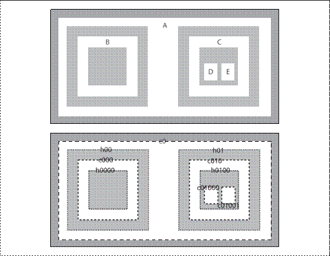
图8-2：传递给cvFindContours()测试图（上图），得到的轮廓（下图）：得到的轮廓只可能有两种，外部轮廓（虚划线）或者孔（点线）
它们是白色区域的外部边界（例如，非零区域）。孔（hole）的外部边界（例如，非零区域）即白色区域的内部边界。在图中是用点线表示外部边界的。OpenCV的cvFindContours()函数可区分内部或外部边界。
包含的概念在很多应用中都非常重要。因此，OpenCV允许得到的轮廓被聚合成一个轮廓树，从而把包含关系编码到树结构中。这个测试图的轮廓树在根节点的轮廓叫c0，孔h00和h01是它的子节点。这些轮廓中直接包含的轮廓成为它们的子节点，以此类推。
现在来看cvFindContours()函数：下面将准确阐述如何定义及如何理解返回值。
int cvFindContours(
IplImage* img,
CvMemStorage* storage,
CvSeq** firstContour,
int headerSize = sizeof(CvContour),
CvContourRetrievalMode mode = CV_RETR_LIST,
cvChainApproxMethod method = CV_CHAIN_APPROX_SIMPLE
);
第一个参数是输入图像，图像必须是8位单通道图像，并且应该被转化成二值的（例如，所有非0像素的值都是一个定值）。cvFindContours()运行的时候，这个图像会被直接涂改，因此如果是将来还有用的图像，应该复制之后再传给cvFindContours()。下一个参数是内存存储器，cvFindContours()找到的轮廓记录在此内存里。正如之前所说，这个存储的空间应该由cvCreateMemStorage()分配。接着是指向CvSeq*的firstContour。无需动手，cvFindContours()会自动分配该指针。实际上，只要在这里传一个指针就可以，函数会自动设置。不要分配和释放（new/delete或者malloc/free）。就是这个指针（例如，*firstContour）指向轮廓树的首地址（head）。cvFindContours()的返回值是找到的所有轮廓的个数。
CvSeq* firstContour = NULL;
cvFindContours(…,&firstContour, …);
headerSize告诉cvFindContours()更多有关对象分配的信息，它可以被设定为sizeof(CvContour)或者sizeof(CvChain)(当近似方法参数method被设定为CV_CHAIN_CODE时使用后者)。最后是mode和method参数，它们分别指定计算方法和如何计算。
mode变量可以被设置为以下四个选项之一：CV_RETR_EXTERNAL、CV_RETR_LIST、CV_RETR_CCOMP或CV_RETR_TREE。mode的值向cvFindContours()说明需要的轮廓类型，和希望的返回值形式。具体说来，mode的值决定把找到的轮廓如何挂到轮廓树节点变量（h_prev，h_next，v_prev和v_next）上。图8-3展示了四种可能的mode值所得到的结果的拓扑结构。
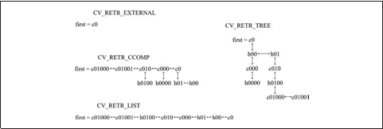
图8-3：树的节点变量与cvFindContours()得到的轮廓“连接”的方法
每种情况下，结构都可以看成是被“横向”连接（h_next和h_prev）联系和被“纵向”连接（v_next和v_prev）不同“层次”。
• CV_RETR_EXTERNAL 只检测出最外的轮廓。图8-2中，只有一个最外轮廓，因此图8-3中第一个轮廓指向最
外的序列，除此之外没有别的连接。
• CV_RETR_LIST 检出所有的轮廓并将它们保存到表（list）中。图8-3描绘了从图8-2的样图中得到的表。在这个例子中，有8条轮廓被找到，它们相互之间由h_prev和h_next连接（这里并没有使用v_prev和v_next）。
• CV_RETR_CCOMP 检出所有的轮廓并将它们组织成双层结构（two-level hierarchy），顶层边界是所有成分的外界边界，第二层边界是孔的边界。图8-3中，我们能看到5个外部边界，其中3个包含孔。孔被v_next和v_prev与它们的外部边界连接起来。最外层的边界c0中有两个孔，因为v_next可以只包括一个值，此节点可以只有一个子节点。c0之内的所有的孔相互间由h_prev和h_next指针连接。
• CV_RETR_TREE 检出所有的轮廓并且重新建立网状的
轮廓结构。在我们给出的例子（图8-2和8-3）中，这意味着根节点是最外的轮廓c0。c0之下是孔h00，在同一层次中与另一个孔h01相连接。同理，每个孔都有子节点（相对应的是c000和c010），这些子节点和父节点被垂直连接起来。这个步骤一直持续到图像最内层的轮廓，这些轮廓会成为树叶节点。
以下的五个值与方法相关（例如，轮廓如何被近似）。
• CV_CHAIN_CODE 用Freeman链码输出轮廓；*其他方法输出多边形（顶点的序列）。
• CV_CHAIN_APPROX_NONE 将链码编码中的所有点转换为点。
• CV_CHAIN_APPROX_SIMPLE 压缩水平，垂直或斜的部分，只保存最后一个点。
• CV_CHAIN_APPROX_TC89_L1或
CV_CHAIN_APPROX_TC89_KCOS 使用Teh-Chin链逼近算法中的一个。
• CV_LINK_RUNS 与上述的算法完全不同的算法，连接所有的水平层次的轮廓。此方法只可与CV_RETR_LIST搭配使用。
使用序列表示轮廓
序列和轮廓有太多的内容需要介绍。我们这里只关注它们基本的特性。当调用cvFindContours函数的时候，返回多个序列。序列的类型依赖与调用cvFindContours时所传递的参数。默认情况下使用CV_RETR_LIST和CV_CHAIN_APPROX_SIMPLE参数。
序列中保存一系列的点，这些点构成轮廓，轮廓是本章的重点。但是需要注意的是，轮廓只是序列所能表示物体的一种。轮廓是点的序列，可以用来表示图像空间中的曲线。这种点的序列很常用，所以需要有专门的函数来帮助我们对它们进行处理。下面是一组这样的处理函数。
int cvFindContours(
CvArr* image,
CvMemStorage* storage,
CvSeq** first_contour,
int header_size = sizeof(CvContour),
int mode = CV_RETR_LIST,
int method = CV_CHAIN_APPROX_SIMPLE,
CvPoint offset = cvPoint(0, 0)
);
CvContourScanner cvStartFindContours(
CvArr* image,
CvMemStorage* storage,
int header_size = sizeof(CvContour),
int mode = CV_RETR_LIST,
int method = CV_CHAIN_APPROX_SIMPLE,
CvPoint offset = cvPoint(0, 0)
);
CvSeq* cvFindNextContour(
CvContourScanner scanner
);
void cvSubstituteContour(
CvContourScanner scanner,
CvSeq* new_contour
);
CvSeq* cvEndFindContour(
CvContourScanner* scanner
);
CvSeq* cvApproxChains(
CvSeq* src_seq,
CvMemStorage* storage,
int method = CV_CHAIN_APPROX_SIMPLE,
double parameter = 0,
int minimal_perimeter = 0,
int recursive = 0
);
第一个函数是cvFindContours()，在前面我们已经提到过。接着是cvStartFindContours()函数，它和cvFindContours()的功能类似。但是cvStartFindContours()每次返回一个轮廓，而不是像cvFindContours()那样一次查找所有的轮廓然后统一返回。调用cvStartFindContours()函数后，返回一个CvSequenceScanner结构。CvSequenceScanner结构中包含一些状态信息，这些信息不可读。你可以通过在CvSequenceScanner结构上依次调用cvFindNextContour()来查找剩余的轮廓。当全部轮廓都被找完之后，cvFindNextContour()将返回NULL。
cvSubstituteContour()函数用于替换scanner指向的轮廓。该函数的一个特性是，如果参数new_contour为NULL，那么当前的轮廓将被从scanner指定的树或链表中删除（受影响的序列会作适当更新，来保证不会有指针指向不存在的物体）。
函数cvEndFindContour()结束轮廓查找，并且将scanner设置为结束状态。注意，scanner并没有被删除，实际上该函数返回的是指针所指序列的第一个元素。
最后一个函数cvApproxChains()函数。该函数将Freeman链转换为多边形表示（精确转换或者近似拟合）。我们将在下一节中详细讲述cvApproxPoly()函数（请参考“多边形逼近”小节）。
Freeman链码
一般情况下，通过cvFindContours获取的轮廓是一系列顶点的序列。另一种不同的表达是设置method参数为CV_CHAIN_CODE，然后生成轮廓。当选择CV_CHAIN_CODE标志的时候，检测的轮廓通过Freeman链码[Freeman67](图8-4)的方式返回。
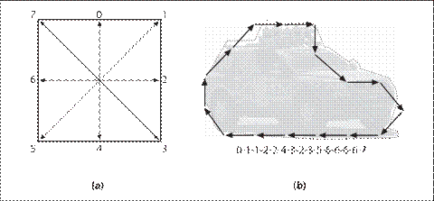
图8-4:a）Freeman链码对应的八个方向；b）用Freeman链码表示轮廓，从汽车后保险杠处开始
在Freeman链码中，多边形被表示为一系列的位移，每一个位移有8个方向，这8个方向使用整数0到7表示。Freeman链码对于识别一些形状的物体很有帮助。如果得到的是Freeman链码，可以通过以下两个函数读出每个点：
void cvStartReadChainPoints(
CvChain* chain,
CvChainPtReader* reader
);
CvPoint cvReadChainPoint(
CvChainPtReader* reader
);
第一个函数用来初始化Freeman链CvChainPtReader结构，第二个函数通过CvChainPtReader来读每个点，
CvChainPtReader对应当前状态。结构CvChainPtReader从CvSeq扩展得来。和CvContourScanner从多个轮廓间迭代一样，CvChainPtReader用于迭代一个使用Freeman链码表示的轮廓中的每个点。CvChainPtReader和CvSeqReader的用法类似。如您所期望，当所有点都读完后，返回的CvChainPtReader值为NULL。
绘制轮廓
一个经常使用的功能是在屏幕上绘制检测到的轮廓。绘制可以用cvDrawContours函数完成：
void cvDrawContours(
CvArr* img,
CvSeq* contour,
CvScalar external_color,
CvScalar hole_color,
int max_level,
int thickness = 1,
int line_type = 8,
CvPoint offset = cvPoint(0, 0)
);
第一参数为要绘制轮廓的图像。第二个参数是要绘制的轮廓，它不像乍看上去那样简单，它是轮廓树的根节点。其他的参数（主要是max_level）将会控制如何绘制轮廓树。下一个参数很容易理解，是绘制轮廓所用的颜色。但是hole_color呢？请回忆轮廓的分类，有外轮廓，也有“洞”（图8-2中的虚划线和点线）。无论绘制单个轮廓还是轮廓树中的所有轮廓，标记为“洞”的轮廓都会使用hole_color指定的颜色绘制。
通过max_level变量可以告诉cvDrawContours()如何处理通过节点树变量连结到一个轮廓上的其他任何轮廓。此变量可以被设置为便利轮廓的最大深度。因此，max_level=0表示与输入轮廓属于同一等级的所有轮廓（更具体地说，输入轮廓和与其相邻的轮廓）被画出，max_level=1表示与输入轮廓属于同一等级的所有轮廓
与其子节点被画出，以此类推。如果想要画的轮廓是由cvFindContours()的CV_RETR_CCOMP或CV_RETR_TREE模式得到的话，max_level的负值也是被支持的。在这种情况下，max_level=-1表示只有输入轮廓会被画出，max_level=-2表示输入轮廓与其直系（仅直接相连的）子节点会被画出，以此类推。可参考例子代码…/opencv/samples/c/contours.c来了解具体使用。
参数thickness和line_type就如其字面含义所示。最后，我们可以给绘图程序一个偏移量，这样轮廓可以被画在指定的精确的坐标上。当轮廓坐标被转换成质心坐标系或其他局部坐标系的时候，这个特性非常有用。
如果在图像上的不同感兴趣区域（ROI）多次执行cvFindContour()，然后又想将所有结果在原来的大图像上显示出来，偏移量offset也很有用。相反，也可
以先从大图提出一个轮廓，然后再用offset和填充，在小图像上形成和轮廓对应的蒙版（mask）。
轮廓例子
例8-2摘自OpenCV安装包。首先创建一个窗口用于显示图像，滑动条（trackbar）用于设置阈值，然后对采二值化后的图像提取轮廓并绘制轮廓。当控制参数的滑动条变化时，图像被更新。
例8-2：根据滑动条参数检测轮廓，在滑动条变化的时候重新检测
IplImage* g_image = NULL;
IplImage* g_gray = NULL;
int g_thresh = 100;
CvMemStorage* g_storage = NULL;
void on_trackbar(int){
if(g_storage==NULL){
g_gray = cvCreateImage(cvGetSize(g_image), 8, 1);
g_storage = cvCreateMemStorage(0);
}
else{
cvClearMemStorage(g_storage);
}
CvSeq* contours = 0;
cvCvtColor(g_image, g_gray, CV_BGR2GRAY);
cvThreshold(g_gray, g_gray, g_thresh, 255, CV_THRESH_BINARY);
cvFindContours(g_gray, g_storage, &contours);
cvZero(g_gray);
if(contours)
cvDrawContours(
g_gray,
contours,
cvScalarAll(255),
cvScalarAll(255),
100
);
cvShowImage("Contours", g_gray);
}
int main(int argc, char** argv)
{
if(!(g_image=cvLoadImage("E:\\Pictures\\portrait.png"))) //argc!=2||
return -1;
cvNamedWindow("Contours", 1);
cvCreateTrackbar(
"Threshold",
"Contours",
&g_thresh,
255,
on_trackbar
);
on_trackbar(0);
cvWaitKey();
return 0;
}
我们关注的重点在on_trackbar函数内。如果全局的参数g_storage为NULL的话，则用cvCreateMemStorage(0)创建一个内存存储器。g_gray被初始化为和g_image同样大小的黑色图像，但是为单通道图像。如果g_storage非空的话，则先用cvClearMemStorage清空内存存储器中的空间，这样以便于重复利用内存存储器中的资源。然后创建一个CvSeq*指针，该指针用来保存cvFindContours()检测到的轮廓。
然后g_image被转换为灰度图像，接着用g_thresh为参数进行二值化处理，得到的二值图像保存在g_gray中。cvFindContours从二值图像g_gray查找轮廓，然后将得到的轮廓用cvDrawContours()函数绘制为白色到灰度图像。最终图像在窗口中显示出来，并将在回调函数开始处申请的结构释放。
另一个轮廓例子
在例8-3中，我们检测出输入图像的轮廓，然后逐个绘制每个轮廓。从这个例子，我们可以了解到轮廓检测方法（如代码中是CV_RETR_LIST）以及max_depth（代码中是0）等参数的细节。如果设置的max_depth是一个比较大的值，你可以发现cvFindContours()返回的轮廓是通过h_next连接被遍历。对于其他一些拓扑结构（CV_RETR_TREE，CV_RETR_CCOMP等），你会发现有些轮廓被画过不止一次。
例8-3：在输入图像上寻找并绘制轮廓
#define CVX_RED CV_RGB(0xff,0x00,0x00)
#define CVX_GREEN CV_RGB(0x00,0xff,0x00)
#define CVX_BLUE CV_RGB(0x00,0x00,0xff)
int main(int argc, char* argv[]){
cvNamedWindow("Contours", 1); //argv[0]
IplImage* img_8uc1 = cvLoadImage("E:\\Pictures\\portrait.png", CV_LOAD_IMAGE_GRAYSCALE); //argv[1]
IplImage* img_edge = cvCreateImage(cvGetSize(img_8uc1), 8, 1);
IplImage* img_8uc3 = cvCreateImage(cvGetSize(img_8uc1), 8, 3);
cvThreshold(img_8uc1, img_edge, 128, 255, CV_THRESH_BINARY);
CvMemStorage* storage = cvCreateMemStorage();
CvSeq* first_contour = NULL;
int Nc = cvFindContours(
img_edge,
storage,
&first_contour,
sizeof(CvContour),
CV_RETR_LIST //Try all four values and see what happens
);
int n = 0;
printf("Total Contours Detected:%d\n", Nc);
for(CvSeq* c=first_contour; c!=NULL; c=c->h_next){
cvCvtColor(img_8uc1, img_8uc3, CV_GRAY2BGR);
cvDrawContours(
img_8uc3,
c,
CVX_RED,
CVX_BLUE,
2, //Try different values of max_level, and see what happens
2,
8
);
printf("Contour #%d\n", n);
cvShowImage(argv[0], img_8uc3);
printf("%d elements:\n", c->total);
for(int i = 0; i<c->total; ++i){
CvPoint* p = CV_GET_SEQ_ELEM(CvPoint, c, i);
printf("(%d, %d)\n", p->x, p->y);
}
cvWaitKey(0);
n++;
}
printf("Finished all contours.\n");
cvCvtColor(img_8uc1, img_8uc3, CV_GRAY2BGR);
cvShowImage(argv[0], img_8uc3);
cvWaitKey(0);
cvDestroyWindow(argv[0]);
cvReleaseImage(&img_8uc1);
cvReleaseImage(&img_8uc3);
cvReleaseImage(&img_8uc3);
cvReleaseImage(&img_edge);
return 0;
}
深入分析轮廓
当分析一个图像的时候，针对轮廓我们也许有很多事情要做。我们对轮廓常用的操作有识别和处理，另外相关的还有多种对轮廓的处理，如简化或拟合轮廓，匹配轮廓到模板，等等。
在这一节中，我们将介绍一些OpenCV函数，这些函数或者可以完成我们的任务，或者可以使得工作变得容易。
多边形逼近
当我们绘制一个多边形或者进行形状分析的时候，通常需要使用多边形逼近一个轮廓，使得顶点数目变少。有多种方法可以实现这个功能，OpenCV实现了其中的一种逼近算法。函数cvApproxPoly是该算法的一种实现，可以处理轮廓序列。
CvSeq* cvApproxPoly(
const void* src_seq,
int header_size,
CvMemStorage* storage,
int method,
double parameter,
int recursive = 0
);
我们可以传递一个列表或数状序列给cvApproxPoly，然后对其表示的轮廓进行处理。函数的返回值对应第一个轮廓，同样我们也可用通过h_next(以及v_next)来访问返回的其他的轮廓。
因为cvApproxPoly在返回结果的时候需要创建新的对象，因此需要指定一个内存存储器以及头结构大小（一般为sizeof(CvContour)）。
逼近的算法目前只可使用CV_POLY_APPROX_DP(如果其他算法也被实现的话，可以选择其他算法)。另外两个参数为逼近算法参数（目前只用到第一个）。parameter参数指定逼近的精度。如果想了这个参数如何起作用的，必须仔细了解具体的算法。最后一个参数指定是否针对全部的轮廓（通过h_next和v_next可达的）进行逼近。如果为0，则表示只处理src_seq指向轮廓。
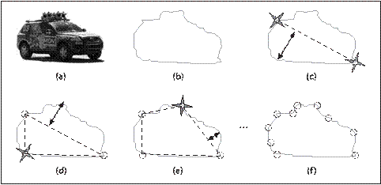
图8-5：cvApproxPoly实现的DP算法的示意图。（a）为原始图像，（b）为提取的轮廓，从2个距离最远的点开始（c），其他的点的选择过程如（d）-（f）所示
下面简要介绍一下算法的工作原理。参考图8-5，算法先从轮廓（图b）选择2个最远的点，然后将2个连成一个线段（图c），然后再查找轮廓上到线段距离最远的点，添加到逼近后的新轮廓（图d）。算法反复迭代，不断将最远的点添加到结果中。直到所有的点到多边形的最短距离小于parameter参数指定的精度（图
f）。从这里可以看出，精度和轮廓的周长，或者外包矩形周长的几分之一比较合适。
曲线逼近的过程和寻找关键点（dominant points）的过程密切相关。跟曲线上的其他点相比，关键点是那些包含曲线信息比较多的点。关键点在逼近算法以及其他应用中都会涉及。函数cvFindDominantPoints()实现了被称为IPAN*[Chetverikov99]的算法。
CvSeq* cvFindDominantPoints(
CvSeq* contour,
CvMemStorage* storage,
int method = CV_DOMINANT_IPAN,
double parameter1 = 0,
double parameter2 = 0,
double parameter3 = 0,
double parameter4 = 0
);
本质上，IPAN算法通过扫描轮廓上并在曲线内部使用可能顶点构造三角形来实现。对于三角形的大小和张角有特殊要求（图8-6）。在比某一特定的全局阈值和它的相邻点的张角小的情况下，具有大张角的点被保留。
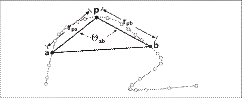
图8-6：IPAN算法使用三角形abp来描述点p
函数cvFindDominantPoints()按照惯例使用参数CvSeq*和CvMemStorage*。并且要求指定一个方法，和
cvApproxPoly()相同，目前可供选择的方法只有一个，就是CV_DOMINANT_IPAN。
接下来的四个参数是：最短距离dmin，最长距离dmax，相邻距离dn和最大角度θmax。如图8-6所示，算法首先把所有两边距离rpa和rpb在dmin和dmax之间， θab< θmax的三角形找出来。然后保留对于距离dn(dn的大小不得超过dmax)有最小夹角θab的所有点p。dmin, dmax, dn和θmax的典型值可以是7, 9, 9, 150(最后一个参数是以度数为单位的角的大小)。
特性概况
轮廓处理中经常遇到的另一个任务是计算一些轮廓变化的概况特性。这可能包括长度或其他一些反映轮廓整体大小的量度。另一个有用的特性是轮廓矩（contour moment），可以用来概括轮廓的总形状特性（我们下一节讨论）。
长度
函数cvContourPerimeter()作用于一个轮廓并返回其长度。事实上，此函数是一个调用函数cvArcLength()的宏。
double cvArcLength(
const void* curve,
CvSlice slice = CV_WHOLE_SEQ,
int is_closed = -1
);
#define cvContourPerimeter(contour)\cvArcLength(contour, CV_WHOLE_SEQ, 1)
cvArcLength(, 的第一个参数是轮廓，其形式可以是点的序列（CvContour*或CvSeg*)或任一n×2的点的数组。后边的参数是slice，以及表明是否将轮廓视为闭合的一个布尔类型（例如，是否将轮廓的最后一个点视为和第一个点有连接）。
slice可以让我们只选择曲线（curve）上的点的部分集合。
一个和cvArcLength()有紧密关系的函数是cvContourArea()，如其名称所示，这个函数同于计算轮廓的面积。函数
的参数contour和slice和cvArcLength()一样。
double cvContourArea(
const CvArr* contour,
CvSlice slice = CV_WHOLE_SEQ
);
边界框
当然长度和面积只是轮廓的简单特性，更复杂一些的特性描述应该是矩形边界框、圆形边界框或椭圆形边界框。有两种方式可以得到矩形边界框，圆形与椭圆形边界框各只有一种方法。
CvRect cvBoundingRect(
CvArr* points,
int update = 0
);
CvBox2D cvMinAreaRect2(
const CvArr* points,
CvMemStorage* storage = NULL
);
最简单的方法是调用函数cvBoundingRect(); 它将返回一个包围轮廓的CvRect。第一个参数points可以是由点组成的序列，一个轮廓（CvContour*）或者一个，n×1双通道的矩阵（CvMat*）。为了理解第二个参数update，我们需要想想前面的描述。当时说CvContour并不完全等于CvSeq；CvSeq能实现的CvContour都可以实现，CvContour甚至能做的更多一点。其中一个附加功能就是CvRect成员可以记载轮廓自己的边界框。如果调用函数cvBoundingRech()时参数update设置为0，便可以直接从CvContour的成员中获取边界框；如果将update设置为1，边界框会被计算出（CvContour成员的内容也会被更新）。
cvBoundingRect()得到的长方形的一个问题是，CvRect只能表现一个四边水平和竖直的长方形。然而函数cvMinAreaRect2()可以返回一个包围轮廓最小的长方形，这个长方形很可能是倾斜的；请看图8-7，该函数的参数和cvBoundingRect()的相似。OpenCV的数据类型CvBox2D就是用来表述这样的长方形的。
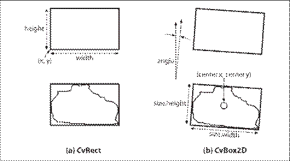
图8-7：CvRect只能表示一个方正的正方形，但CvBox2D可以表示任何倾斜度的正方形
typedef struct CvBox2D{
CvPoint2D32f center;
CvSize2D32f size;
float angle;
}CvBox2D;
圆形和椭圆形边界
接着我们来看函数cvMinEnclosingCircle()。该函数和矩形边界框的作用基本相同，输入同样很灵活，可以是点的序列，也可是二维点的数组。
int cvMinEnclosingCircle(
const CvArr* points,
CvPoint2D32f* center,
float* radius
);
OpenCV里没有专门用来表示圆的结构，因此需要给函数cvMinEnclosing-Circle()传递中心和浮点型半径的两个指针来获取计算结果。
与最小包围圆一样，OpenCV提供一函数来拟合一组点，
以获取最佳拟合椭圆。
CvBox2D cvFitEllipse2(
const CvArr* points
);
cvMinEnclosingCircle()和cvFitEllipse2()的细微差别在于，前者只简单计算完全包围已有轮廓的最小圆，而后者使用拟合函数返回一个与轮廓最近似的椭圆。这意味着并不是轮廓中所有的点都会被包在cvFitEllipse2()返回的椭圆中。该拟合由最小二乘拟合方法算出。
椭圆的拟合的结果由CvBox2D结构体返回，给出的矩形正好完全包围椭圆，如图8-8所示。
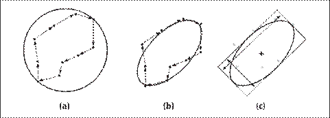
图8-8：a）10个点的轮廓与最小包围圆；b）与最佳拟合椭圆；c）OpenCV给出的表示该椭圆的矩形
几何
在处理CvBox2D或多边形边界的时候，经常需要进行多边形以及边界框的重叠判断。OpenCV提供了一组方便的小函数用于此类几何测试。
CvRect cvMaxRect(
const CvRect* rect1,
const CvRect* rect2
);
void cvBoxPoints(
CvBox2D box,
CvPoint2D32f pt[4]
);
CvSeq* cvPointSeqFromMat(
int seq_kind,
const CvArr* mat,
CvContour* contour_header,
CvSeqBlock* block
);
double cvPointPolygonTest(
const CvArr* contour,
CvPoint2D32f pt,
int measure_dist
);
第一个函数cvMaxRect()根据输入的2个矩形计算，它们的最小外包矩形。
下一个实用函数cvBoxPoints()用于计算CvBox2D结构表示矩形的4个顶点。当然你也可以自己通过三角函数计算，不过这很令人头大，而简单调用一下这个函数则可求出。
第三个实用函数cvPointSeqFromMat从mat中初始化序列。这在你需要使用轮廓相关的函数，但是函数又不支持矩阵参数的时候使用。第一个参数用于指定点序列的
类型，seq_kind可以为以下类型：点集为0；曲线为CV_SEQ_KIND_CURVE；封闭曲线为CV_SEQ_KIND_CURVE|CV_SEQ_FLAG_CLOSED。第二参数是输入的矩阵，该参数是连续的1维向量。矩阵的类型必须为CV_32SC2或CV_32FC2。
下面的两个参数是指针，指针指向的内容通过该函数来填充。contour_header参数对应轮廓结构，一般需要事先创建，不过由该函数负责初始化。block参数同样如此，也是由该函数负责初始化。最后，该函数返回一个类型为CvSeq*的序列指针，指向你输入的序列头*contour_header。返回值跟输入参数相同只是为了使用该函数时更方便，因为这样你就可以将该函数当作某个轮廓函数的参数使用，代码写入同一行。
最后一个平面几何相关的函数是cvPointPolygonTest()，
用于测试一个点是否在多边形的内部。如果参数measure_dist非零，函数返回值是点到多边形的最近距离。如果measure_dist为0，函数返回+1、-1、0，分别表示在内部、外部、在多边形边上。参数contour可以是序列，也可以是2通道矩阵向量。
轮廓的匹配
前面介绍了轮廓的一些基础知识，并且演示了如果在OpenCV中操作轮廓对象。现在我们来研究一下如何在实际应用中使用轮廓。一个跟轮廓相关的最常用到的功能是匹配两个轮廓。如果有两个轮廓，如何比较它们；或者如何比较一个轮廓和一个抽象模板。这两种情况随后都会讨论。
矩
比较两个轮廓最简洁的方式是比较它们的轮廓矩。这里先简短介绍一下矩的含义。简单地说，矩是通过对轮廓上所有点进行积分运算（或者认为是求和运算）而得到的一个粗略特征。通常，我们如下定义一个轮廓的（p, q）矩：
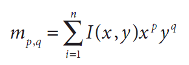在公式中p对应x维度上的矩，q对应y维度上的矩，阶数表示对应的部分的指数。该计算是对轮廓边界上所有像素（数目为n）进行求和。如果p和q全部为0，那么m00实际上对应轮廓边界上点的数目。
下面的函数用于计算这些轮廓矩：
void cvContoursMoments(
CvSeq* contour,
CvMoments* moments
)
第一个参数是我们要处理的轮廓，第二个参数指向一个结构，该结构用于保存生成的结果。CvMoments结构定义如下：
typedef struct CvMoments{
//spatial moments
double m00, m10, m01, m20, m11, m02, m30, m21, m12, m03;
//central moments
double mu20, mu11, mu02, mu30, mu21, mu12, mu03;
//m00!=0?1/sqrt{m00}:0
double inv_sqrt_m00;
}CvMoments;
在cvContoursMoments()函数中，只用到了m00, m01, …, m03几个参数；以mu开头的参数在其他函数中使用。
在使用CvMoments结构的时候，我们可以使用以下的函数来方便地获取一个特定的矩：
double cvGetSpatialMoment{
CvMoments* moments,
int x_order,
int y_order
};
调用cvContoursMoments()函数会计算所有3阶的矩（m21和m12会被计算，但是m22不会被计算）。
再论矩
刚刚描述的矩计算给出了一些轮廓的简单属性，可以用来比较两个轮廓。但是在很多实际应用中，刚才的计算方法得到的矩并不是做比较时最好的参数。具体说来，经常会用到归一化的矩（因此，不同大小但是形状相同的物体会有相同的值）。同样，刚才的小节中的简单的矩依赖于所选坐标系，这意味着物体旋转后就无法正确匹配。
OpenCV提供了计算Hu不变矩[Hu62]以及其他归一化矩的函数。CvMoments结构可以用cvMoments或者cvContourMoments计算。并且，cvContourMoments现在只是cvMoments的一个别名。
一个有用的小技巧是用cvDrawContour()描绘一幅轮廓的
图像后，调用一个矩的函数处理该图像。使用无论轮廓填充与否，你都能用同一个函数处理。
以下是4个相关函数的定义：
void cvMoments(
const CvArr* image,
CvMoments* moments,
int isBinary = 0
);
double cvGetCentralMoment(
CvMoments* moments,
int x_order,
int y_order
)
double cvGetNormalizedCentralMoment(
CvMoments* moments,
int x_order,
int y_order
);
void cvGetHuMoments(
CvMoments* moments,
CvHuMoments* HuMoments
);
第一个函数除了使用的是图像（而不是轮廓）作为参数，其他方面和cvContoursMoments()函数相同，另外还增加了一个参数。增加的参数isBinary如果为CV_TRUE，cvMoments将把图像当作二值图像处理，所有的非0像素都当作1。当函数被调用的时候，所有的矩被计算（包含中心矩，请看下一段）。除了x和y的值被归一化到以0为均值，中心距本质上跟刚才描述的矩一样。
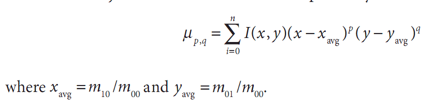
这儿xavg=m10/m00且yavg=m10/m00
归一化矩和中心矩也基本相同，除了每个矩都要除以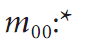的某个幂：
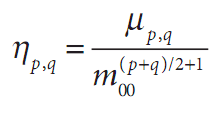
最后来介绍Hu矩，Hu矩是归一化中心距的线性组合。之所以这样做是为了能够获取代表图像某个特征的矩函数，这些矩函数对某些变化如缩放、旋转和镜像映射（除了h1）具有不变性。
Hu矩是从中心距中计算得到，其计算公式如下所示：
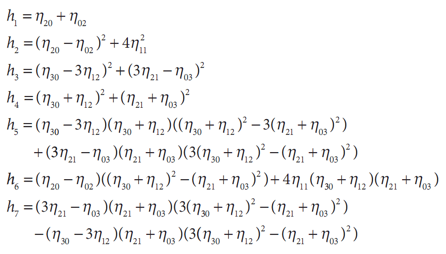
参考图8-9和表8-1，我们可以直观地看到每个图像对应的7个Hu矩。通过观察可以发现当阶数变高时，Hu矩一般会变小。对于这一点不必感到奇怪，因为根据定义，高阶Hu矩由多个归一化矩的高阶幂计算得到，而归一化矩都是小于1的，所以指数越大，计算所得的值越小。

图8-9：五个字符的图像；观察它们的Hu矩可以获取跟字符相关的一些直观理解
需要特别注意的是“I”，它对于180度旋转和镜面反射都是对称的，它的h3到h7矩都是0；而“O”具有同样的对称特性，所有的Hu矩都是非零的。对于这个问题，我们留给读者去思考。您可以仔细查看字符图像，比较不同的Hu矩，以获得这些矩到底如何表达的直观感受。
表8-1：在图8-9中所示的五个字符的Hu矩的值
h1 |
h2 |
h3 |
h4 |
h5 |
h6 |
h7 |
h8 |
A |
2.84E-01 |
1.96E-03 |
1.48E-02 |
2.27E-04 |
-4.15E-07 |
1.00E-05 |
-7.94E-09 |
I |
4.58E-01 |
1.82E-01 |
0 |
0 |
0 |
0 |
0 |
O |
3.79E-01 |
2.62E-04 |
4.50E-07 |
5.86E-07 |
1.53E-13 |
7.78E-09 |
-2.59E-13 |
M |
2.47E-01 |
4.78E-04 |
7.26E-05 |
2.62E-06 |
-3.61E-11 |
-5.72E-08 |
-7.22E-24 |
F |
3.19E-01 |
2.91E-02 |
9.40E-03 |
8.22E-04 |
3.87E-08 |
2.02E-05 |
2.29E-06 |
使用Hu矩进行匹配
double cvMatchShape(
const void* object1,
const void* object2,
int method,
double parameter = 0
);
很自然，使用Hu矩我们想要比较两个物体并且判明它们是否相似。当然，可能有很多“相似”的定义。为了使比较过程变得简单，OpenCV的函数cvMatchShapes()允许我们简单地提供两个物体，然后计算它们的矩并根据我们提供的标准进行比较。
这些物体可以是灰度图图像或者轮廓。如果你提供了图
像，cvMatchShape()会在对比的进程之前为你计算矩。cvMatchShapes()使用的方法是表8-2中列出的三种中的一种。
表8-2：cvMatchShapes()使用的匹配方法
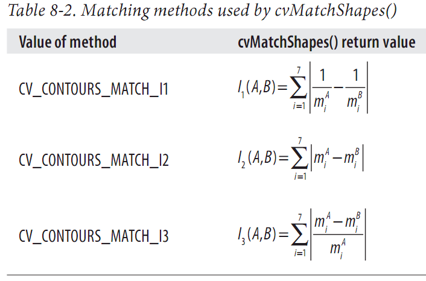
在表中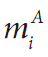和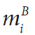 被定义为
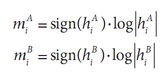
在这里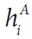和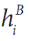 分别是A和B的Hu矩。
对于对比度量标准（metric）是如何被计算的，表8-2中
的三个常量每个都用了不同的方法。这个度量标准最终决定了cvMatchShapes()的返回值。最后一个参数变量现在不能使用，因此我们可以把它设成默认值0。
等级匹配
我们经常想要匹配两个轮廓，然后用一个相似度量度来计算轮廓所有匹配的部分。使用概况参数的方法（比如矩）是相当快的，但是它们能够表达的信息却不是很多。
为了找一个更精确的相似度量度，首先考虑一下轮廓树的结构应该会有帮助。请注意，此处的轮廓树（contour tree）不是cvFindContour()函数返回的多个轮廓的继承描述；此处轮廓树是用来描述一个特定形状（不是多个特定形状）内各部分的等级关系。
类似于cvFindContours()这样的函数返回多个轮廓，轮廓树（contour tree）并不会把这些等级关系搞混，事实上，它正是对于某个特定轮廓形状的等级描述。
理解了轮廓树的创建会比较容易理解轮廓树。从一个轮廓创建一个轮廓树是从底端（叶节点）到顶端（根节点）的。首先搜索三角形突出或凹陷的形状的周边（轮廓上的每一个点都不是完全和它的相邻点共线的）。每个这样的三角形被一条线段代替，这条线段通过连接非相邻点的两点得到；因此，实际上三角形或者被削平（例如，图8-10的三角形D）或者被填满（三角形C）。每个这样的替换把轮廓的顶点减少1，并且给轮廓树创建一个新节点。如果这样一个三角形
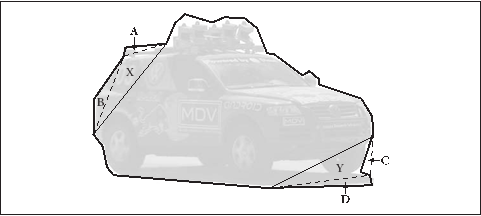
图8-10：建立一个轮廓树：第一个回合，车的外围轮廓产生叶节点A,B,C和D；第二个回合，产生X和Y（X是A和B的父节点，Y是C和D的父节点）
的两侧有原始的边，那么它就是得到的轮廓树的叶子；如果一侧是已存在三角形，那么它就是那个三角形的父节点。这个过程的迭代最终把物体的外形减成一个四边形，这个四边形也被剖开；得到的两个三角形是根节点的两个子节点。
结果的二分树（图8-11）最终将原始轮廓的形状信息编码。每个节点被它所对应的三角形的信息（比如三角形的大小，它的生成是被切出来还是被填进去的，这样的信息）所注释。
这些树一旦被建立，就可以很有效的对比两大轮廓。这个过程开始于定义两个树节点的对应关系，然后比较对应节点的特性。最后的结果就是两个树的相似度。
事实上，我们基本不需要理解这个过程。OpenCV提供一个函数从普通的CvContour对象自动生成轮廓树并转化
返回；还提供一个函数用来对比两个树。不幸的是，建立的轮廓树并不太鲁棒（例如，轮廓上很小的改变可能会彻底改变结果的树）。同时，最初的三角形（树的根节点）是随意选取的。因此，为了得到较好的描述需要首先使用函数cvApproxPoly()之后将轮廓排列（运用循环移动）成最初的三角形不怎么受到旋转影响的状态。
CvContourTree* cvCreateContourTree(
const CvSeq* contour,
CvMemStorage* storage,
double threshold
);
CvSeq* cvContourFromContourTree(
const CvContourTree* tree,
CvMemStorage* storage,
CvTermCriteria criteria
);
double cvMatchContourTrees(
const CvContourTree* tree1,
const CvContourTree* tree2,
int method,
double threshold
);
这个代码提到了CvTermCriteria()，该函数的细节将在第9章给出。现在你可以用下面的默认值（或相似的）使用cvTermCriteria()简单建立一个结构体。
CvTermCriteria termcrit = cvTermCriteria(
CV_TERMCRIT_ITER|CV_TERMCRIT_EPS, 5, 1
);
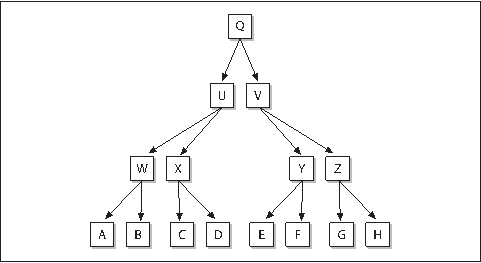
图8-11：二分树描述的是像图8-10那样的轮廓
轮廓的凸包和凸缺陷
另一个理解物体形状或轮廓的有用的方法是计算一个物体的凸包（convex hull）然后计算其凸缺陷（convexity defects）[Homma85]。很多复杂物体的特性能很好的被这种缺陷表现出来。
图8-12用人手图举例说明了凸缺陷这一概念。手周围深色的线描画出了凸包，A到H被标出的区域是凸包的各个“缺陷”。正如所看到的，这些凸度缺陷提供了手以及手状态的特征表现的方法。
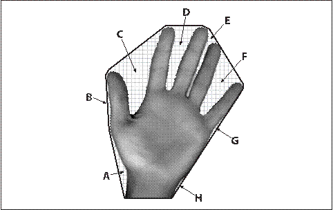
图8-12：凸缺陷。深色的轮廓是围绕手的凸包；格子区域（A-H）是手的轮廓相对于凸包的凸缺陷
#define CV_CLOCKWISE 1
#define CV_COUNTER_CLOCKWISE 2
CvSeq* cvConvexHull2(
const CvArr* input,
void* hull_storage = NULL,
int orientation = CV_CLOCKWISE,
int return_points = 0
);
int cvCheckContourConvexity(
const CvArr* contour
);
CvSeq* cvConvexityDefects(
const CvArr* contour,
const CvArr* convexhull,
CvMemStorage* storage = NULL
);
OpenCV有三个关于凸包和凸缺陷的重要函数。第一个函数简单计算已知轮廓的凸包，第二个函数用来检查一个已知轮廓是否是凸的。第三个函数在已知轮廓是凸包的情况下计算凸缺陷。
函数cvConvexHull2()的第一个参数是点的数组，这个数组是一个n行2列的矩阵（n × 2），或者是一个轮廓。如果是点矩阵，点应该是32位整型（CV_32SC1）或者是浮点型（CV_32FC1）。下一个参数是指向内存存储的一个指针，为结果分配内存空间。下一个参数是CV_CLOCKWISE或者CV_COUNTERCLOCKWISE中的一个，这个参数决定了程序返回的点的排列方向。最后一个参数returnPoints，可以是0或1。如果设置为1，点会被存储在返回数组中。如果设置为0，只有索引被存储在返回数组中，索引是传递给cvConvexHull2()的原
始数组的索引。
这时，聪明的读者可能要问：“如果参数hull_storage是内存存储，为什么它的类型是void*而不是CvMemStorage*?”问得好！这是因为很多时候作为凸包返回的点的形式，数组可能比序列更加有用。考虑到这一点，参数hull_storage的另一个可能性是传递一个指向矩阵的指针CvMat*。这种情况下，矩阵应该是一维的且和输入点的个数相同。当cvConvexHull2()被调用的时候，它会修改矩阵的头来指明当前的列数。
有时候，已知一个轮廓但并不知道它是否是凸的。这种情况下，我们可以调用函数cvCheckContourConvexity()。这个测试简单快速，但是如果传递的轮廓自身有交叉的时候不会得到正确结果。
第三个函数cvConvexityDefects()，计算凸缺陷并返回一个缺陷的序列。为了完成这个任务，cvConvexityDefects()要求输入轮廓，凸包和内存空间，
从这个内存空间来获得存放结果序列的内存。前两个参数是CvArr*，和传递给cvConvexHull2()的参数input的形式相同。
typedef struct CvConvexityDefect{
//point of the contour where the defect begins
CvPoint* start;
//point of the contour where the defect ends
CvPoint* end;
//point within the defect farthest from the convex hull
CvPoint* depth_point;
//distance between the farthest point and the convex hull
float depth;
}CvConvexityDefect;
函数cvConvexityDefects()返回一个CvConvexityDefect结构
体的序列，其中包括一些简单的参数用来描述凸缺陷。start和end是凸包上的缺陷的起始点和终止点。depth_point是缺陷中的距离凸包的边（跟该缺陷有关的凸包边）最远的点。最后一个参数depth是最远点和包的边（edge）的距离。
成对几何直方图
之前我们简单介绍过Freeman链码编码（FCCs）。Freeman链码编码是对一个多边形的序列如何“移动”的描述，每个这样的移动有固定的长度和特定的方向。但是，我们并没有更多说明为什么需要用到这种描述。
Freeman链码编码的用处很多，但最常见的一种值得深入了解一下，因为它支持了成对几何直方图（pairwise geometrical histogram, PGH）的基本思想。
PGH实际上是链码编码直方图（chain code histogram, CCH）的一个扩展或延伸。CCH是一种直方图，用来统计一个轮廓的Freeman链码编码每一种走法的数字。这种直方图有一些良好的性质。最显著的是，将物体旋转45度，那么新的直方图是老直方图的循环平移（
请看图8-13）。这就提供了一个不被此类旋转影响的形状识别方法。
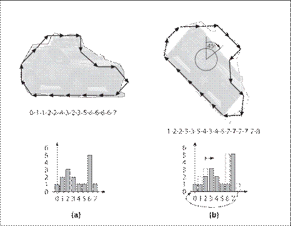
图8-13：Freeman链码编码对一个轮廓地描述（上）和它们的链码编码直方图（下）；当原始的轮廓a)被顺时针旋转45度b)的时候，原来的直方图向右移动一个单位便可得到的旋转后物体的链码编码直方图
PGH的构成如下图所示（请看图8-14）。多边形的每一个边被选择成为“基准边”。之后考虑其他的边相对于这些基础边的关系，并且计算三个值：dmin, dmax和θ。dmin是两条边的最小距离，dmax是最大距离，θ是两边的夹角。PGH是一个二维直方图，其两个维度分别是角度和距离。对于每一对边，有两个bin，一个bin为(dmin, θ)，另一个bin为(dmax, θ)。对于这样的每一组边，这两个bin都被增长，中间值d(dmin和dmax之间的值)同样也被增长。
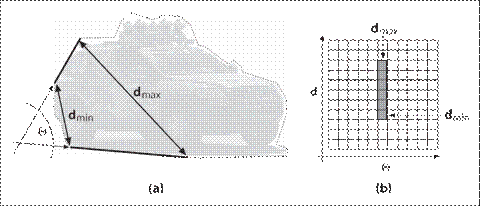
图8-14：成对几何直方图：a)多边形上的每两个边都有一个夹角、一个最小距离和一个最大距离；b)这些数字被编码到一个二维直方图，这个直方图有旋转不变性，可以被用来匹配物体
PGH的使用和FCC相似。一个重要的不同是，PGH的描述能力更强，因此在尝试解决复杂问题的时候很有用，比如说大量的形状需要被辨识，并且/或者有很多背景噪声的时候。用来计算PGH的函数是：
void cvCalcPGH(
const CvSeq* contour,
CvHistogram* hist
);
在这里轮廓可以包含整数值的点的坐标；当然直方图必须是二维的。